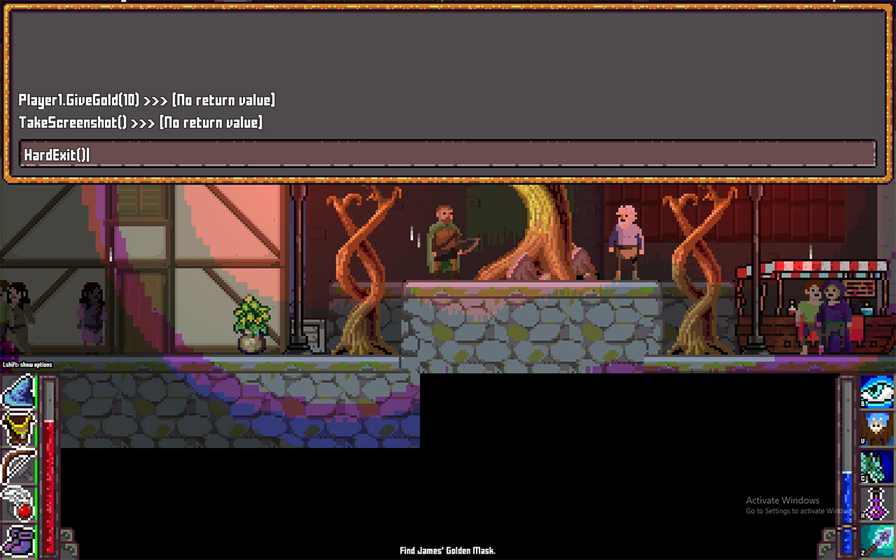

Debug Console

prerequisite: you must have NuGet package Microsoft.CodeAnalysis.CSharp.Scripting installed.
The following code snippet creates an in-game debug console where you can execute commands at runtime:
using System;
using System.Collections.Generic;
using BonEngineSharp;
using BonEngineSharp.Defs;
using BonEngineSharp.Framework;
using BonEngineSharp.UI;
using Microsoft.CodeAnalysis.CSharp.Scripting;
/// <summary>
/// Debug console to execute commands at runtime.
/// </summary>
public class DebugConsole
{
/// <summary>
/// Is debug console currently visible?
/// </summary>
public bool Visible { get; private set; }
// globals object
object _globals;
// main console window
UIWindow _window;
UIElement _outputContainer;
UITextInput _input;
// ui root folder
string _UIroot;
// list of output lines
struct OutputLine
{
public string Line;
public bool IsError;
}
List<OutputLine> _outputData = new List<OutputLine>();
bool _outputDirty = true;
/// <summary>
/// Init the debug console.
/// </summary>
/// <param name="globals">Object to use as globals (every public member of this object will be accessible to script). Can be null.</param>
/// <param name="UIroot">UI root folder to read ini files from.</param>
/// <param name="height">Console height, in pixels.</param>
public void Initialize(object globals, string UIroot = "Game/UI/", int height = 400)
{
// store ui root
if (!UIroot.EndsWith('/')) { UIroot += '/'; }
_UIroot = UIroot;
// store globals
_globals = globals;
// create window
var ui = BonEngine._Engine.UI;
_window = ui.CreateWindow(UIroot + "window.ini", null, "");
_window.WidthPercents = 100;
_window.HeightPixels = height;
_window.AutoArrangeChildren = false;
// add command input
_input = ui.CreateTextInput(UIroot + "textinput.ini", _window);
_input.Anchor = new PointF(0, 1);
_input.Origin = new PointF(0, 1);
}
/// <summary>
/// Execute a single command.
/// </summary>
public void Execute(string command)
{
// skip empty
if (command.Length == 0) { return; }
// command for output
var commandForOutput = (command.Length > 24 ? command.Substring(0, 24) : command) + " >>> ";
// try to execute
try
{
if (!command.EndsWith(';')) { command += ';'; }
var result = CSharpScript.EvaluateAsync(command, null, _globals).Result;
if (result != null)
{
PrintCommandResult(commandForOutput + result.ToString());
}
else
{
PrintCommandResult(commandForOutput + "[No return value]");
}
}
// handle errors
catch (Exception e)
{
PrintError(commandForOutput + e.Message);
}
}
/// <summary>
/// Print last command's result.
/// </summary>
private void PrintCommandResult(string result)
{
_outputData.Insert(0, new OutputLine() { Line = result, IsError = false });
_outputDirty = true;
}
/// <summary>
/// Print error message.
/// </summary>
private void PrintError(string result)
{
_outputData.Insert(0, new OutputLine() { Line = result, IsError = true });
_outputDirty = true;
}
/// <summary>
/// Show the debug console.
/// </summary>
public void Show()
{
Visible = true;
}
/// <summary>
/// Hide the debug console.
/// </summary>
public void Hide()
{
Visible = false;
}
/// <summary>
/// Toggle console visibility.
/// </summary>
public void Toggle()
{
Visible = !Visible;
}
/// <summary>
/// Update the debug console.
/// </summary>
public void Update(double deltaTime)
{
// update UI
if (!Visible) { return; }
BonEngine._Engine.UI.UpdateUI(_window);
// make sure input line is focused
_input.IsReceivingInput = true;
// on enter, send command
var input = BonEngine._Engine.Input;
if (input.ReleasedNow(KeyCodes.KeyKpEnter) || input.ReleasedNow(KeyCodes.KeyReturn) || input.ReleasedNow(KeyCodes.KeyReturn2))
{
Execute(_input.Value);
_input.Value = "";
}
// update output window
if (_outputDirty)
{
// remove previous output window
if (_outputContainer != null)
{
_window.RemoveChild(_outputContainer);
}
// recreate output window
_outputContainer = BonEngine._Engine.UI.CreateContainer(null, _window);
_outputContainer.WidthPercents = 100;
_outputContainer.HeightPixels = _window.CalculatedDestRect.Height - (_input.CalculatedDestRect.Height + 6);
_outputContainer.AutoArrangeChildren = false;
// add output
int index = 0;
foreach (var output in _outputData)
{
var para = BonEngine._Engine.UI.CreateText(_UIroot + "small_text.ini", _outputContainer, output.Line);
if (output.IsError) { para.Color = Color.Red; }
para.Origin = new PointF(0, 1);
para.Anchor = new PointF(0, 1);
para.Offset = new PointI(0, -(int)(index * para.CalculatedDestRect.Height * 0.75f) - _input.CalculatedDestRect.Height);
index++;
if (index * para.CalculatedDestRect.Height > _outputContainer.HeightPixels - _window.Padding.Top) { break; }
}
if (index < _outputData.Count)
{
_outputData.RemoveRange(index, _outputData.Count - index);
}
// no longer need update
_outputDirty = false;
}
}
/// <summary>
/// Draw the debug console.
/// </summary>
public void Draw()
{
if (!Visible) { return; }
BonEngineSharp.BonEngine._Engine.UI.Draw(_window, false);
}
}
Usage
To use the snippet above, you need to make 3 calls:
Initialize
Call this to create the debug console (note: it won't be visible until you call 'Show' or 'Toggle'):
_debugConsole = new DebugConsole();
_debugConsole.Initialize(globalObject, uiRootFolder);
- globalObject is an object to set as the global scope, all its public members will be accessible when executing commands.
- uiRootFolder is the path of the folder where you keep your UI ini files at. You must have at least the following stylesheets: window.ini, textinput.ini, and small_text.ini.
Note: if you don't know how to create UI files, just copy the whole ui folder for the demo projects assets in the project repo.
Update
Update the console + toggle it with F1 key:
_debugConsole.Update(deltaTime);
if (Input.ReleasedNow(KeyCodes.KeyF1))
{
_debugConsole.Toggle();
}
Draw
Render the console (will only show it if you called 'Toggle' or 'Show' before):
_debugConsole.Draw();